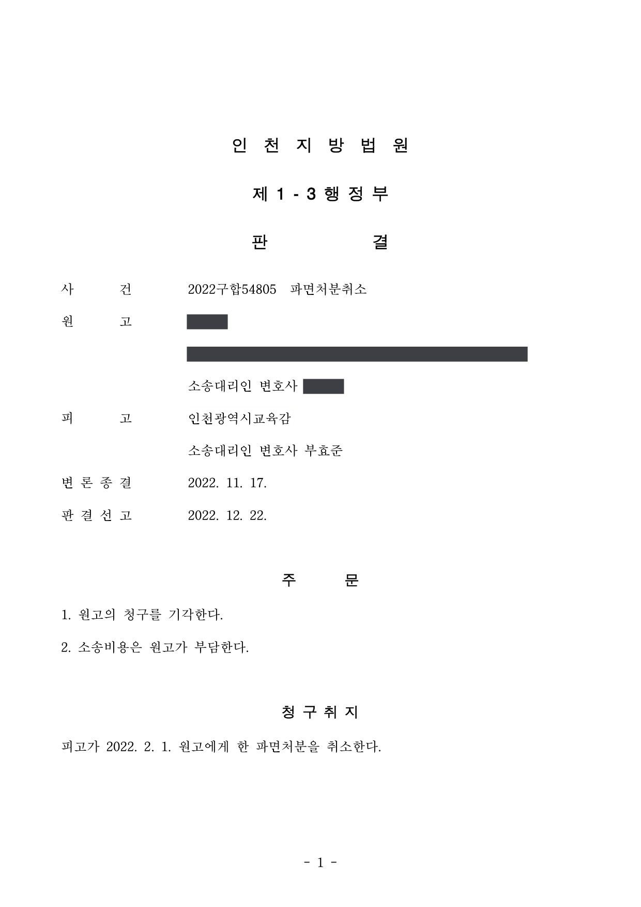

교원 파면처분 취소소송
인천지방법원 2022구합54805 · 담당변호사 부효준
판결문

사건의 요지
교장 공모 시험의 출제에 부당한 영향을 주는 행위에 가담하여 형사판결이 확정된 교원에 대한 파면처분의 취소소송으로, 확정 형사판결의 증명력, 교육감이 주관한 공모 절차의 적법성, 인사 관련 비위에 대한 징계양정이 다투어졌습니다. 처분청인 교육감을 대리하였습니다.
사건의 주요 내용
원고는 1992년 임용되어 약 30년간 근무한 교원입니다. 원고는 교장 공모 절차의 시험 출제에 부당한 영향을 주는 행위에 가담하였다는 범죄사실로 위계공무집행방해죄와 국가공무원법위반죄(시험 또는 임용의 방해행위 금지 위반)로 기소되어 2021년 12월 징역형의 집행유예를 선고받았고, 이 판결은 항소와 상고가 모두 받아들여지지 않아 2022년 9월 확정되었습니다.
처분청(교육감)은 징계위원회의 의결을 거쳐 2022년 2월, 형사판결에서 유죄로 인정된 행위가 국가공무원법 제56조(성실 의무)와 제63조(품위 유지의 의무)를 위반하여 같은 법 제78조의 징계사유에 해당한다는 이유로 원고를 파면하였습니다. 원고는 교원소청심사위원회에 소청심사를 청구하였으나 2022년 7월 받아들여지지 않자 파면처분의 취소를 구하는 소송을 제기하였습니다. 부효준 변호사는 처분청을 대리하였습니다.
원고의 주장
- 교육공무원법 제29조의2·제29조의3과 교육공무원임용령 제12조의5에 따르면 공모 교장의 선발·임용 요청, 심사위원회의 구성과 심사, 후보자 추천은 각급 학교의 장의 권한이므로, 교육감이 주관한 공모 교장 선발과 교육지원청 심사위원회의 심사는 법령에 따른 적법한 직무집행이 아니다. 따라서 원고의 행위는 위계공무집행방해죄와 국가공무원법위반죄가 되지 않고, 그 성립을 전제로 한 파면처분은 처분사유가 없어 위법하다.
- 설령 성실의무·품위유지의무 위반이 인정되더라도 원고는 예상문제를 건네준 뒤의 진행 상황을 알지 못하였고 가담 정도가 소극적·수동적이며, 결과적으로 공모 교장 임용추천 후보자로 최종 선발되지 않았고, 약 30년간 한 차례의 징계도 없이 성실히 근무한 점과 가정 상황을 고려하면 파면은 사회통념상 현저하게 타당성을 잃어 재량권을 일탈·남용한 것이다.
부효준 변호사의 주장
- 동일한 사실관계에 관하여 확정된 형사판결이 유죄로 인정한 사실은 행정소송에서도 유력한 증거자료가 되므로, 형사판결의 사실인정을 뒤집을 특별한 사정이 없는 이 사건에서 비위행위의 존재는 인정된다고 주장하였습니다.
- 교장공모제는 교육공무원법 제29조의3에 근거하고, 같은 조 제8항과 교육공무원임용령 제12조의5 제7항의 위임에 따라 정해진 업무처리지침이 시·도 교육감에게 공모 절차를 지원하도록 한 것은 임용제청권자가 그 권한의 일부를 교육감에게 위임한 것이므로, 교육감이 심사위원회를 설치하여 심사하고 후보자를 추천한 것은 적법한 직무집행이라고 반박하였습니다.
- 이 비위행위는 교육공무원 징계양정 등에 관한 규칙 별표의 '인사와 관련한 비위' 중 '비위의 정도가 심하고 고의가 있는 경우'로서 징계기준이 '파면'이고, 같은 규칙 제4조 제2항 제6호에 따라 감경할 수 없는 비위이므로 파면은 징계기준에 따른 적정한 처분이라고 주장하였습니다.
법원의 판단
법원은 행정재판이 형사재판의 사실인정에 구속되지는 않지만 동일한 사실관계에 관하여 확정된 형사판결이 유죄로 인정한 사실은 유력한 증거자료가 된다는 대법원 판례(1983. 9. 13. 선고 81누324 판결, 2012. 5. 24. 선고 2011두28240 판결)를 전제로, 형사판결의 사실인정을 그대로 받아들이기 어렵다고 볼 특별한 사정이 없으므로 비위행위의 존재가 인정된다고 보았습니다.
교장공모제 절차의 적법성에 관하여는, 교장공모제가 교육공무원법 제29조의3에 근거한 것이고, 공모 절차·임용·평가의 세부 사항을 정한 업무처리지침이 시·도 교육감에게 절차를 지원하도록 한 것은 임용제청권자가 권한의 일부를 교육감에게 위임한 것으로 보이며, 관계 법령상 학교의 장 외의 기관이 심사위원회를 둘 수 없다고 해석하기 어렵고, 임용제청권자는 학교장의 요청에 기속되지 않고 적격자를 제청할 광범위한 재량을 가진다(대법원 2018. 6. 15. 선고 2016두57564 판결)는 점을 들었습니다. 이에 따라 교육감의 공모 교장 선발·추천은 적법한 직무행위이고 이를 위계로 방해한 행위는 위계공무집행방해죄와 국가공무원법위반죄에 해당한다고 판단하였습니다.
징계양정에 관하여는 징계처분이 사회통념상 현저하게 타당성을 잃어야 위법하다는 대법원 판례의 기준에 따라, 이 비위행위가 교육공무원 징계양정 등에 관한 규칙 별표상 '인사와 관련한 비위'로서 '비위의 정도가 심하고 고의가 있는 경우'에 해당하여 징계기준이 '파면'이고 같은 규칙 제4조 제2항 제6호에 따라 감경도 할 수 없는 점, 교원에게는 일반 직업인보다 높은 도덕성이 요구되는 점, 공모 교장 선발 절차의 공정성을 심각하게 훼손한 행위로서 가담 정도와 결과가 가볍지 않은 점을 들어 재량권 일탈·남용을 부정하고 원고의 청구를 받아들이지 않았습니다.
행정재판이 형사재판의 사실인정에 구속을 받는 것은 아니라고 하더라도 동일한 사실관계에 관하여 이미 확정된 형사판결이 유죄로 인정한 사실은 유력한 증거자료가 된다. 따라서 다른 증거들에 비추어 형사재판의 사실 판단을 채용하기 어렵다고 인정되는 특별한 사정이 없는 한 이와 반대되는 사실은 인정할 수 없다(대법원 1983. 9. 13. 선고 81누324 판결, 대법원 2012. 5. 24. 선고 2011두28240 판결 등 참조).
인천지방법원 2022구합54805 판결 이유 '4. 가. 1) 이 사건 비위행위의 존재'
공무원인 피징계자에게 징계사유가 있어 징계처분을 하는 경우 어떠한 처분을 할 것인지는 징계권자의 재량에 맡겨진 것이고, 다만 징계권자가 그 재량권의 행사로서 한 징계처분이 사회통념상 현저하게 타당성을 잃어 징계권자에게 맡겨진 재량권을 남용한 것이라고 인정되는 경우에 한하여 그 처분을 위법한 것이라 할 수 있다. 공무원에 대한 징계처분이 사회통념상 현저하게 타당성을 잃었다고 하려면 구체적인 사례에 따라 징계의 원인이 된 비위사실의 내용과 성질, 징계에 의하여 달성하려고 하는 행정목적, 징계 양정의 기준 등 여러 요소를 종합하여 판단할 때에 그 징계 내용이 객관적으로 명백히 부당하다고 인정할 수 있는 경우라야 한다(대법원 1997. 11. 25. 선고 97누14637 판결, 대법원 2012. 10. 11. 선고 2012두10895 판결 등 참조).
인천지방법원 2022구합54805 판결 이유 '4. 나. 재량권의 일탈·남용 주장에 관한 판단' 가) 부분
교원에게는 일반 직업인보다 높은 도덕성이 요구되고 교원의 비위행위는 본인은 물론 교원사회 전체에 대한 국민의 신뢰를 실추시킬 우려가 있을 뿐 아니라(대법원 2000. 6. 5. 선고 98두16613 판결 등 참조), 그 행위의 부정적인 영향력 내지 파급력이 지도 하에 있는 학생 등에게 미칠 우려가 크므로, 교원의 비위행위에 대한 징계양정에서는 이러한 특수성을 엄중히 고려할 필요가 있다.
인천지방법원 2022구합54805 판결 이유 '4. 나.' 나) 2) 부분
※ 판결 이유 가운데 이 사건의 판단 기준이 된 부분을 그대로 옮긴 것으로, 당사자 이름 등은 가렸습니다.
이 사건이 보여 주는 것
형사판결이 확정된 비위행위를 이유로 한 징계처분 취소소송에서는 행정법원이 형사판결의 사실인정을 사실상 그대로 받아들이므로, 형사재판 단계에서 사실관계를 다투지 못하였다면 행정소송에서 처분사유 자체를 부인하는 전략은 성공하기 어렵습니다. 방해된 공무집행이 위법하였다는 주장도, 관계 법령과 지침이 교육감에게 절차 지원·심사 권한을 위임한 구조라면 받아들여지지 않습니다.
교육공무원의 징계양정은 '교육공무원 징계양정 등에 관한 규칙' 별표의 징계기준과 감경 제한 규정(제4조 제2항)에 따라 판단됩니다. 특히 채용·승진·전보 등 인사와 관련한 비위는 감경이 금지되는 유형이어서, 오랜 근무 경력이나 징계 전력이 없다는 사정만으로는 파면·해임의 양정을 뒤집기 어렵다는 점을 이 사건이 보여 줍니다.
비슷한 처분을 받으셨다면
행정처분은 처분이 있음을 안 날부터 90일 이내에 행정심판이나 취소소송으로 다투어야 하고, 기간이 지나면 돌이킬 수 없는 처분은 집행정지를 서둘러야 합니다. 처분서를 받은 날짜부터 확인해 드립니다.